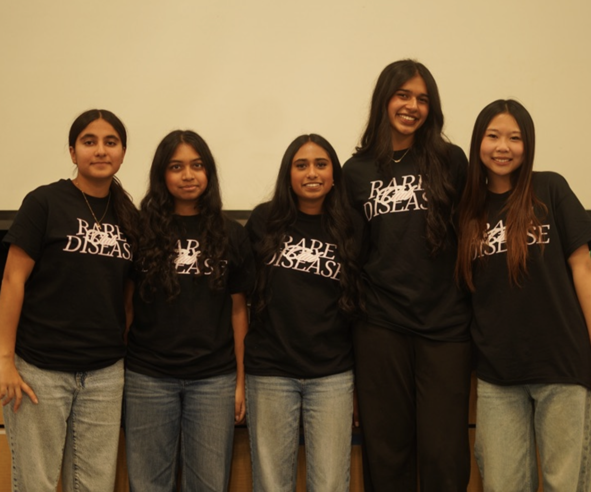
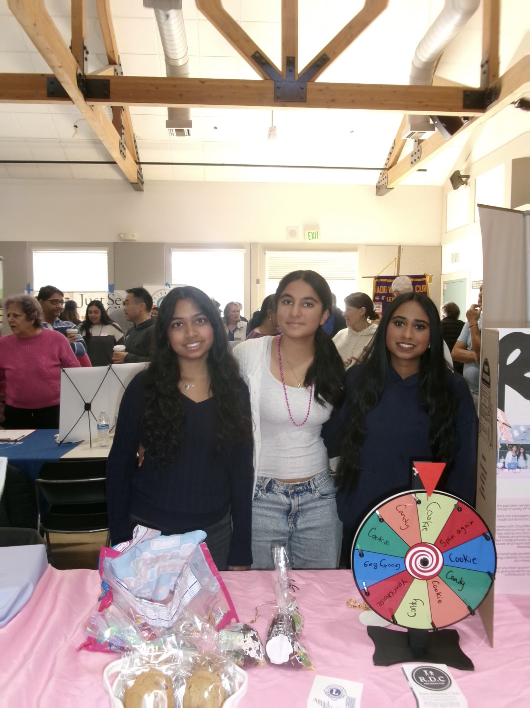

Rare Care Coalition is a youth-led initiative under Rare Disease Club that brings together students, nonprofits, and community partners to support individuals and families affected by rare diseases. The initiative focuses on hands-on impact through large-scale service projects, including the creation and distribution of care kits for patients.
As part of our commitment to raising awareness about rare diseases, over the past few years Rare Disease Club members have served as guest speakers at local middle schools, including Hart Middle School. Through engaging presentations and discussions, we introduce students to the world of rare diseases, the challenges faced by patients and families, and the importance of scientific research and advocacy.

Rare Disease Club hosts a Speech & Debate Summer Camp to help students develop public speaking, critical thinking, and communication skills. Through interactive lessons, practice activities, and mentorship, participants build confidence while learning how to effectively advocate for important issues and engage in meaningful discussions.
Rare Disease Club partners with local restaurants, including Chipotle, The Habit Burger Grill, and Panda Express, to host fundraising events that support rare disease awareness and advocacy. These partnerships help us engage the community, raise funds for our initiatives, and expand our impact through education and outreach.
